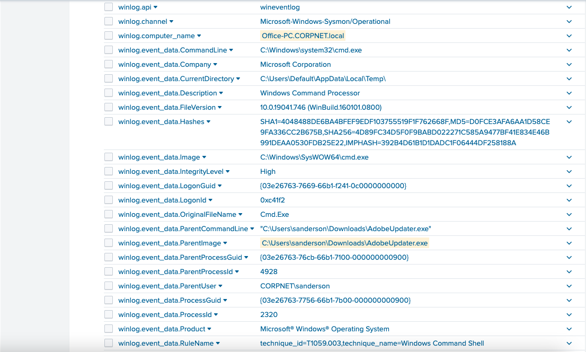
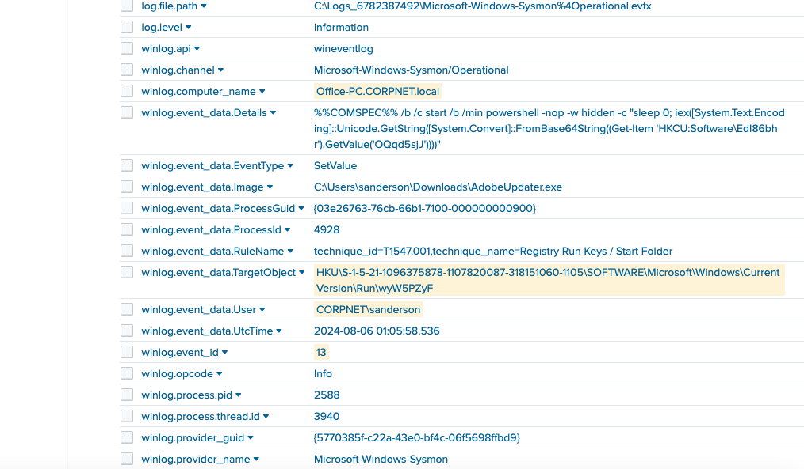
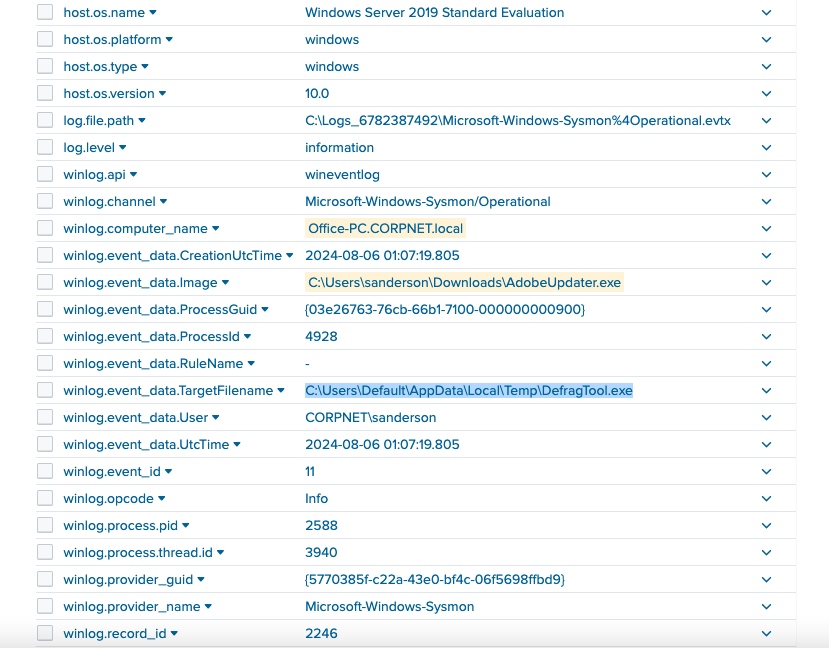
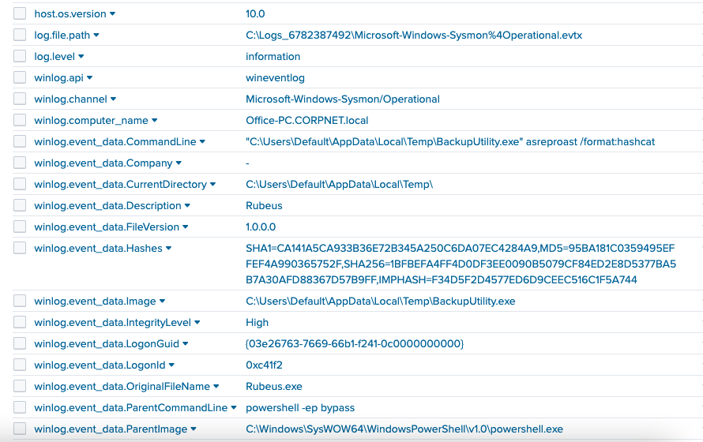
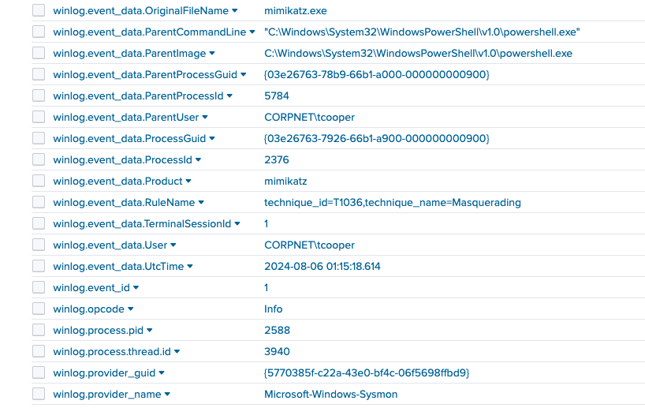
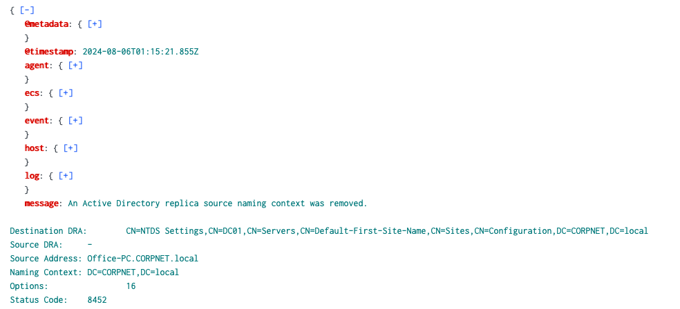
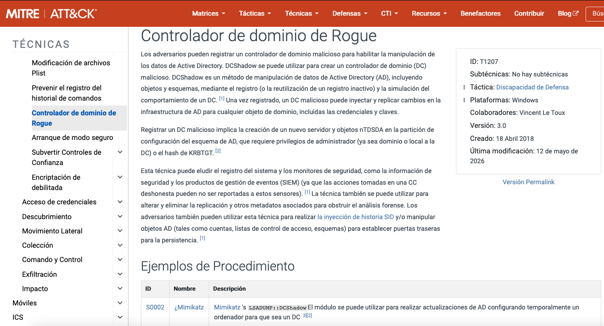
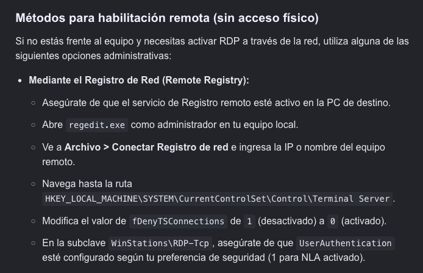
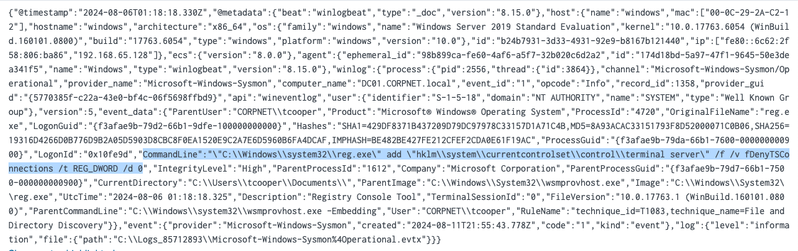
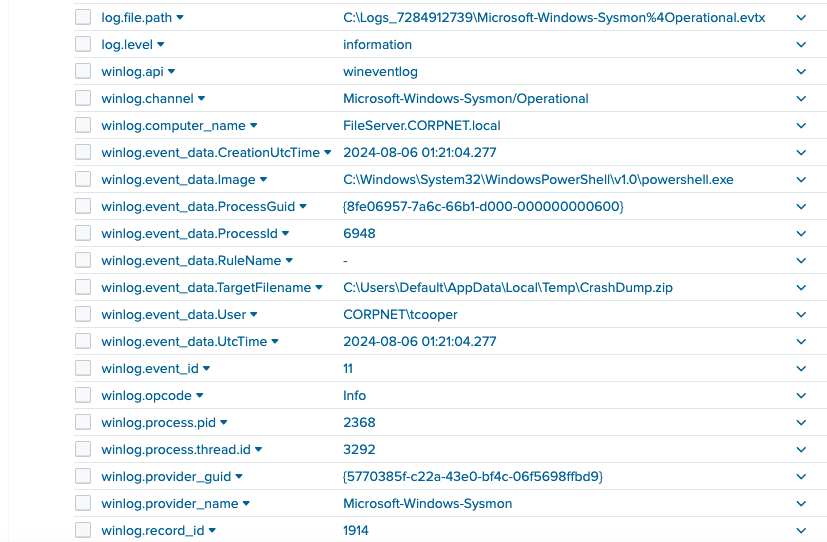

💻 ShadowRoast Lab
Escenario
Como analista de ciberseguridad en TechSecure Corp, usted ha sido alertado de actividades inusuales dentro del entorno de Active Directory de la compañía. Los informes iniciales sugieren un acceso no autorizado y posibles intentos de escalada de privilegios.
Preguntas
¿Cuál es el nombre de archivo malicioso utilizado por el atacante para el acceso inicial?
Se realizó la búsqueda utilizando un filtro para el Event ID 1 de Sysmon, que corresponde a la creación de procesos en Windows. También se agregó el nombre del equipo sospechoso. De esta manera, se encontró un ejecutable llamado AdobeUpdater.exe, relacionado con la ejecución de procesos de PowerShell y CMD.

¿Cuál es el nombre de la clave de ejecución del registro creado por el atacante para mantener la persistencia?
Ahora relacionamos en el filtro los eventos asociados con los registros de Windows, específicamente el Event ID 13 de Sysmon. También tomamos en cuenta el equipo comprometido y revisamos el campo TargetObject, el cual nos proporciona la ruta de la clave modificada. De esta manera, encontramos una clave específica relacionada con AdobeUpdater.exe, que contiene un comando de PowerShell con código en Base64 utilizado para mantener la persistencia.

¿Cuál es la ruta completa del directorio utilizado por el atacante para almacenar sus herramientas caídas?
En este caso, relacionamos el equipo comprometido con el archivo ejecutable y el Event ID 11 de Sysmon, que nos permite identificar la creación de archivos. De esta manera, pudimos encontrar el directorio donde el atacante almacenó sus herramientas y el ejecutable relacionado.

¿Qué herramienta utilizó el atacante para la escalada de privilegios y la cosecha de credenciales?
Para encontrar la herramienta, se utilizó el Event ID 1 de Sysmon, que corresponde a la creación de procesos. También se tomó en cuenta el directorio donde el atacante había almacenado sus herramientas. La consulta arrojó tres resultados y uno de ellos corresponde a una herramienta llamada Rubeus, utilizada para realizar ataques relacionados con la autenticación de Kerberos en entornos de Active Directory y obtener credenciales.

¿Fue exitosa la cosecha de credenciales del atacante? Si es así, ¿puede proporcionar el nombre de usuario de la cuenta de dominio comprometido?
Siguiendo la consulta anterior, se pudo detectar que el atacante logró comprometer otra cuenta. Además, se identificó el uso de la herramienta Mimikatz, y el usuario comprometido fue tcooper.

¿Cuál es la herramienta utilizada por el atacante para registrar un controlador de dominio fraudulento para manipular los datos de Active Directory?
Para este caso, se utilizó un filtro relacionado con eventos de Windows asociados con Active Directory. En los resultados se encontró un evento relacionado con la replicación de Active Directory desde el equipo comprometido, comportamiento que puede estar asociado con la técnica DCShadow.

Al investigar esta técnica en MITRE ATT&CK, podemos observar que una de las herramientas que permite realizarla es Mimikatz.

¿Cuál es el primer comando utilizado por el atacante para habilitar RDP en máquinas remotas para el movimiento lateral?
Realizando una investigación sobre RDP, se pudo identificar el valor relacionado con la habilitación de conexiones remotas. Posteriormente, se utilizó este valor como filtro junto con el Event ID 1 de Sysmon, correspondiente a la creación de procesos, lo que permitió encontrar el comando utilizado por el atacante.


¿Cuál es el nombre del archivo creado por el atacante después de comprimir archivos confidenciales?
Para este caso, se filtró el Event ID 11 de Sysmon, relacionado con la creación de archivos, junto con la búsqueda de archivos con extensión .zip. De esta manera, se encontró un archivo relacionado con el equipo comprometido.

Conclusión
Este tipo de incidentes nos deja como gran enseñanza que un pequeño error, como descargar una actualización no legítima de un programa, puede desencadenar un gran problema. No debemos olvidar descargar software y actualizaciones de sitios legítimos. Además, cuando el incidente ya ha escalado al punto de mantener persistencia en el sistema, lo mejor será aislar el host comprometido y continuar con la investigación para determinar si otros equipos también fueron afectados.